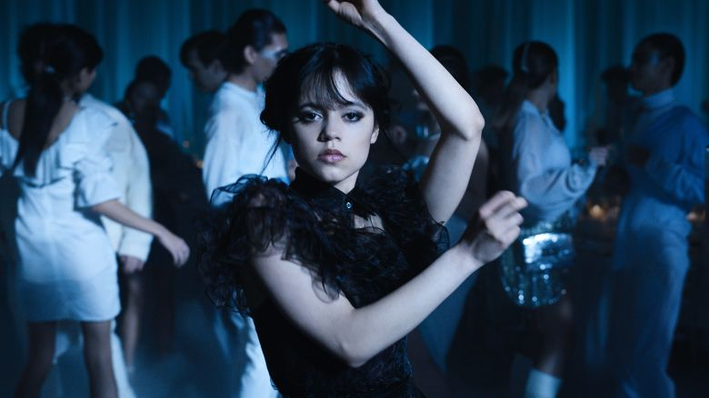

Why we can’t get enough of the ‘Wednesday’ dance
(CNN) - Wednesday Addams doesn’t do anything by accident. The most stoic and deliberate member of the Addams Family, she rarely makes unnecessary movements, smiles and blinks included.
So when the spirit of dance possessed the typically morose teen at her school dance in the new Netflix series bearing her name, it caused an immediate stir, onscreen and off.
The brief scene makes up less than three minutes of the entire series, but it’s quickly become “Wednesday’s” most iconic moment for how free our kooky protagonist appears to feel. Her eyes betray a rare, ghoulish passion. Her limbs, typically glued to her side, are flung about freely. The dance is her, to be sure – lots of severe, stilted movements and cues from decades past. Certainly no one could mistake Wednesday’s dance for the latest TikTok trend, right?
Something about that peculiar dance unlocked something weird within all of us, and it’s taken off quicker than a fire at Camp Chippewa. Clips of the choreography inspired viewers to check out the series, making it one of the streamer’s most-watched shows ever (“Stranger Things,” who?). Its online popularity rocketed Lady Gaga’s “Bloody Mary” back onto charts more than a decade after the song’s release, and it was only featured in fan-made TikToks, not the show itself! “Wednesday” star Jenna Ortega’s admission that she choreographed the routine herself invited new fans – celebrities included – to give it a whirl and even infuse the routine with moves from their own cultures.
Wednesday Addams would likely be mortified if she knew her moves had become, shudder, mainstream, but her dance just won’t die – and that, she just might enjoy. Here’s what lends the “Wednesday” dance its supernatural staying power.
The scene has its own mythos
The “Wednesday” dance scene only debuted a month ago, but it has a certain “mythology” to it already, said Jenna Drenten, associate professor of marketing at Loyola University Chicago who studies how users of TikTok and other digital platforms express their identities.
Most of the scene’s lore was developed offscreen. Ortega, playing a teenaged Wednesday with her pitch-black humor in tact, has said she choreographed the routine herself. She counted among her influences Bob Fosse, Siouxsie Sioux and ’80s goth dance clubs (she also likely sneaked in some references to “The Addams Family” TV series from the ’60s).
What’s more, Ortega has admitted that she’s not a trained dancer, making her routine perhaps even more inviting to non-dancers who found the routine on TikTok, Drenten said.
“I’m not a dancer and I’m sure that’s obvious,” Ortega told NME.
But Ortega’s dedication has inspired outrage, too – she told NME she filmed some of the dance while waiting on Covid-19 test results, which later came back positive. This prompted some to condemn the production for failing to follow proper Covid-19 prevention protocols on set – but still, “Wednesday” continued to make waves.
The viral trends that remain in the cultural conversation the longest typically don’t remain only on their platform of origin, Drenten said. Look at the Corn Kid: He appeared in a YouTube series singing the praises of the cob, then clips of his appearance went viral on TikTok and he’s since gone on to work with Chipotle, Green Giant and the state of South Dakota, promoting corn offline.
“To have a longer shelf life, TikTok trends have to make that leap to a cultural trend, beyond the borders of TikTok,” she said. “The ‘Wednesday’ dance had an advantage in this sense because the dance and ‘The Addams Family’ legacy originated outside of TikTok from the start.”
The ‘Wednesday’ dance has become a shared ritual
Another thing the “Wednesday” dance has on its side – the human tendency to learn a dance for social currency.
Think of the “Electric Slide,” “Macarena,” “Cupid Shuffle” – standards at bat mitzvahs and weddings, moves many of us know so well we can perform them without thinking. Performing them en masse at an event like that might feel like a Pavlovian response to a DJ’s song choice, but it’s also a shared ritual that fosters “a sense of solidarity and belonging,” Drenten said.
“Every gesture and movement enables the person performing it to inherently say, ‘I get it, I’m in the know, we have this shared experience,’” Drenten said.
That’s part of the reason why dance routines, from “Renegade” to Lizzo’s “About Damn Time,” so often dominate TikTok. But unlike those trends, the “Wednesday” dance wasn’t set to a popular song, although The Cramps’ punk anthem “Goo Goo Muck” has since earned some new fans. The moves were easy enough to pick up, Drenten said, “straightforward but unique.”
But it took Lady Gaga to take the “Wednesday” dance stratospheric. The version that’s gone über-viral on TikTok is a “fancam” of sorts, or a mashup of clips, set fittingly to Gaga’s “Bloody Mary,” a Biblical ode to dancing uninhibitedly. Even Mother Monster herself performed a version of the “Wednesday” dance, wearing two long braids.
Millions of users have since put their own spin on Wednesday’s school dance solo, with some users incorporating Polynesian or Indian dance styles in their versions or making their own Wednesday looks (Thing, the disembodied hand, included!).
Wednesday gives us permission to be weirdos
Belonging, of course, is antithetical to the ethos of Wednesday, who’s never cared for fitting in. She’s perfectly content on an island of her own, where the sun never shines and old-timey torture tools are abundant. That Wednesday’s idiosyncratic moves have been copied so widely could threaten to diminish her status as a patron saint of weirdos – except that Wednesday’s style and attitude have been copied for decades.
Wednesday Addams has existed in some form since the late 1930s – first as an unnamed comic character, then as a diminutive child on a TV sitcom, then, in her most famous iteration before “Wednesday” premiered, as a dead-eyed Christina Ricci. And fans of Wednesday have been dressing up like her for decades, Drenten said, often inspired by Ricci’s portrayal. The eldest Addams child is no longer a secret her biggest fans can keep from mainstream pop culture.
Since Wednesday’s debut, she’s been an idiosyncratic icon to loners and goth-adjacents for her unapologetic commitment to the macabre. Yet she’s still an “outlier” among the women and girls of fiction, wrote Emily Alford for Longreads, because she’s never softened or bent to certain story tropes. She is who she is, and she isn’t changing.
“She brought to the screen a morbid self-acceptance that set her apart, and became a crucial blueprint for a generation of girls developing their own gallows humor,” Alford wrote.
And now, many of those girls and other users are finding each other on TikTok, where niche communities can blossom (or reach mainstream users). The app is a “space for people to discover who they are, and more importantly, to find other people who share their same interests,” Drenten said, even if those interests involve cosplaying as a certain dispassionate teenager.
“TikTok arguably fosters a lot of reproduction and users can feel pressure to act, perform, and look a certain way,” Drenten said. “But Wednesday reminds people that being themselves in that sea of sameness is freeing.”